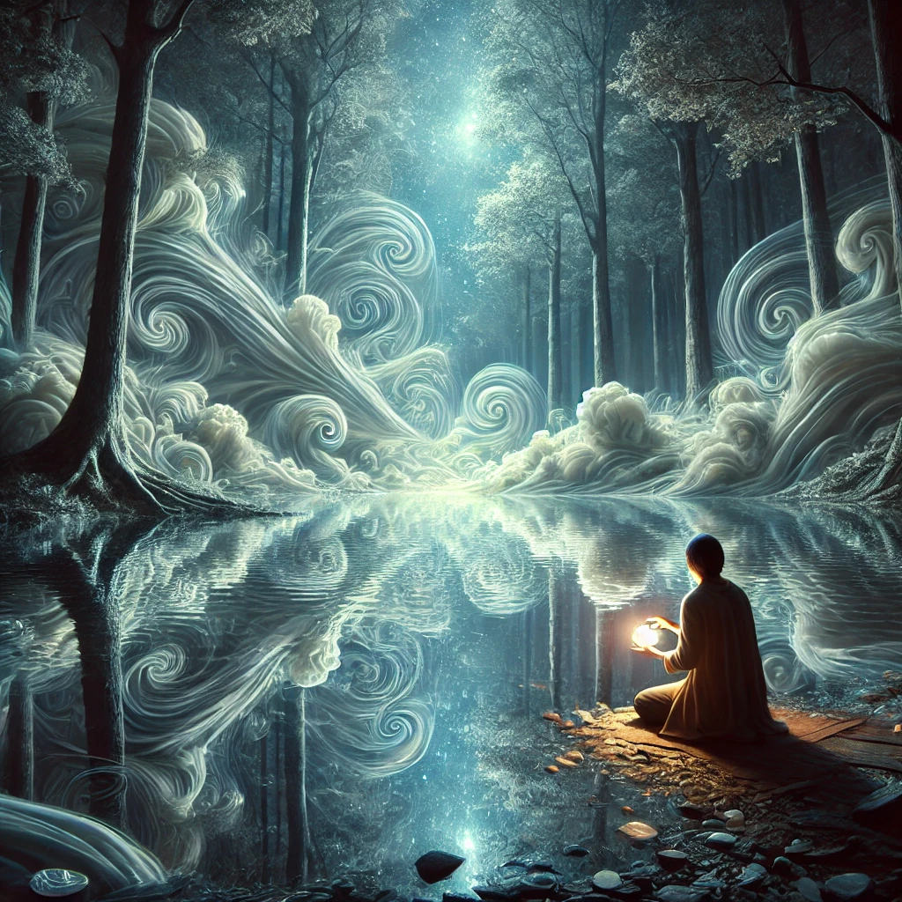

You kneel by the shimmering pool, its surface reflecting not the sky above, but something deeper—memories, visions, and paths yet to be walked. The compass in your hand vibrates softly, resonating with the energy of the water.
As you gaze into the pool, its surface ripples, and images begin to emerge. You see fragments of your life intertwined with possibilities—threads of what could be, all converging into the present moment. The water seems to speak, though no words are heard:
“The pool reflects what is, what was, and what could be. To gaze is to understand, but understanding requires courage.”
The visions grow clearer, offering you choices on where to direct your focus.

What will you focus on?